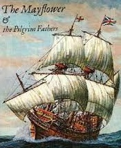
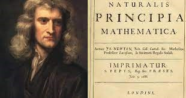
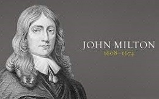
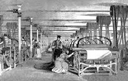
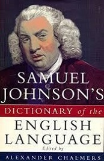
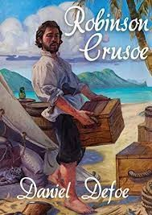

Lecture 5
England in the 17th–18th Centuries
The 17th century became a period of constant change in British history. During the century Parliament established its supremacy over the monarchy in Britain. Anger grew in the country at the way that the Stuart monarchs raised money, especially because they did not get the agreement of the House of Commons to do so first. This was against ancient tradition. In addition Puritans regarded many of the practices of the Anglican Church, and also its hierarchical structure, as immoral. Some of them thought the luxurious lifestyle of the king and his followers was immoral too. They were also fiercely anti-Catholic and suspicious of the apparent sympathy towards Catholicism of the Stuart monarchs. This conflict led to the Civil War, which ended with complete victory for the parliamentary forces.
The First Stuart King of England
Until the early 17th century England and Scotland were two entirely independent kingdoms. The situation changed dramatically in 1603 on the death of Elizabeth I of England. James VI, king of Scotland, inherited the throne of England and became its king, James I of England. He was the first Stuart king of England (Kings & Queens of England: Episode 4: Stuarts). So the crowns of these two countries were united, though their parliaments, administrative and judicial systems continued to be separate.
Like all the Tudors, Elizabeth had appreciated the importance of trade and the merchant class. James I, who came from Scotland with its underdeveloped industry and negligible foreign trade, quickly threw them into opposition by his frankly pro-Spanish policy. In 1604 the war with Spain was ended with a peace treaty that was openly criticized in England, because it did not secure the right of trade with Spanish colonies. Soon peace with Spain passed into a policy of actual alliance, which infuriated the merchants and the Protestants. The navy was neglected. Traders complained of the attacks of pirates even in the English Channel. Holland began to replace Spain as England’s chief rival at sea.
The change in James I’s foreign policy led to serious problems in the situation at home. In 1605 a group of the king’s opponents wanted to blow up the Houses of Parliament during the king’s speech from the throne. The Gunpowder Plot was a failed attempt by a group of English Catholics to kill King James I, his family, and most of the Protestant aristocracy. The plot was intended to begin a rebellion during which James’ nine-year-old daughter (Princess Elizabeth) could be installed as a Catholic head of the state.
At midnight on November 5, 1605 a party of armed men arrested Guy Fawkes who stated that it had been his purpose to destroy the King and the Parliament. Today the English still mark Guy Fawkes’ Night with bonfires and the following rhyme:
Remember, remember the Fifth of November –
Gunpowder Treason and plot.
For I see no reason why Gunpowder Treason
Should ever be forgot.
With the development of friendly relations with Spain, Catholics enjoyed a period of court favour. Both James I and his son Charles I were the descendants of the rebellious Mary, Queen of Scots. No wonder they were supported by Scotland and by English Catholics.
At the same time, the Puritans, who had developed their religious views in the relative freedom of Queen Elizabeth’s reign, were outlawed by James I. In 1620 a large group of Puritans had to escape first to Holland, and then to America. They sailed on board the Mayflower which carried them from Plymouth to their new life in North America. They later came to be known as the Pilgrim Fathers. The Puritans, as well as the Protestants, opposed the regime of James I which, they believed, was working to restore Catholicism.
On the Eve of the Civil War
In the 17th century, England was still largely an agricultural country: only the east and the south were industrially developed. Yet, the bourgeoisie was powerful enough to organize a struggle against the monarchy, because it had the support of farmers and the new nobility – the gentry. Rich farmers were connected with the wool market, and their interests were the same as those of the bourgeoisie.
Convinced of the divine right of kings, the Stuart Kings James I and Charles I followed the medieval notion of monarchy, ignoring Parliament but Parliament had become powerful enough to quarrel with the King who raised taxes without the consent of the Commons. When in 1625 Charles I took his father’s place on the throne he revived some feudal laws, which provoked a strong feeling of opposition. He also set Parliament against the royal family by marrying the sister of the French king, who was a Catholic and the marriage was unpopular in Protestant Britain. Charles I was eager to support the French king in his wars, and asked Parliament for money, explaining that England was in danger. Before granting him the money, the Commons wanted to know who the enemy was. Charles got out of the unpleasant situation by dismissing Parliament.
Then he summoned the second Parliament to ask for money. The Commons drew up a long list of complaints, and in a few months, the second Parliament was also dissolved. In the same way Charles I dissolved Parliament several times. Finally, the Commons put forward a list of demands: no taxation without the consent of Parliament, no imprisonment without trial, responsibility of ministers appointed by the king to Parliament. Charles had to sign The Petition of Rights. The next day, the King, angry at the opposition, sent a message to the Speaker to dissolve Parliament, but Parliament refused to be dissolved. The infuriated King came down to Westminster himself. He arrested the leaders of the Opposition and decided never to call another Parliament.
For eleven years following 1628, the King ruled without Parliament. He chose his advisers who represented him in his relations with Scotland and Ireland. The harshness of their rule gave rise to a number of rebellions. In Parliament, the Puritans formed two parties: the Presbyterians and the Independents. The leader of the Independents was Oliver Cromwell, the man who later changed the course of events in English history.
In 1639, Scotland started a war against England. The need to have an army made the King call Parliament in 1640. The Commons criticized the King for mismanaging the country. Charles got angry and dissolved Parliament. In history, this Parliament is known as the “Short Parliament”. But the Scots marched on into the north of England, and Charles was advised to summon Parliament again, so as to get money to raise the army. This parliament is known as the “Long Parliament” because it lasted for 19 years. Parliament passed an Act saying that the King’s ministers should be responsible to Parliament, and that Parliament could be dismissed only by its own consent.
The Civil War and the Commonwealth
Charles I believed that he could turn the current of events in his favour by force. In the summer of 1642, the Civil War between the Cavaliers or the Royalists, supporters of the King, and the Roundheads, supporters of Parliament began. At the beginning, the war was favourable to the King. The Roundheads were brave enough but inexperienced in fighting, while the Cavaliers were all trained warriors. The Royalist leader was the King’s nephew, Prince Rupert who had come from Germany to help his uncle. The most famous Parliamentarian general was Oliver Cromwell, a Member of Parliament. Cromwell started to train a body of soldiers, “a regiment on horse” and soon his army of a “New Model” was well-disciplined. Cromwell won two great battles against the Royalists – at Marston Moor, in 1644, and at Naseby, in 1645. Those two battles made Parliament supreme in the North and in the Midlands and finally, the King’s army was destroyed.
The High Court was assembled together to try the King and to put an end to the war. The trial was held in Westminster Hall, and lasted several days. The King was found guilty and sentenced to death. Three days later, on January 30, 1649, Charles I was beheaded. England was proclaimed a Commonwealth (a Republic) and Oliver Cromwell became Lord Protector.
From 1649 to 1660 Britain was a republic, but the republic was not a success. Cromwell and his friends created a government far more severe than Charles’s had been. They had got rid of the monarchy, and they now got rid of the House of Lords and the Anglican Church.
Cromwell’s regime introduced a number of measures, which were to become moral rules for everyday life. Games and theatrical performances were prohibited. Statues and pictures were taken out of the churches. The music that followed services was excluded. Cromwell himself prohibited the celebration of Christmas and Easter.
When Cromwell died in 1658, the Protectorate, as his republican administration was called, collapsed.
The Restoration of Monarchy
But when Cromwell died, he, his system of government, and the puritan ethics that went with it became so unpopular that in 1661, Charles II, the son of the executed king was asked to take the throne. The laws and Acts of Cromwell’s government were automatically cancelled. The Anglican Church was restored. That event is known as the Restoration. Charles II represented a complete contrast to the restrictive rule of Cromwell. He enjoyed horse-racing and was a great patron of the arts and sciences.
An interesting legend is connected with Charles II’s return to London. On his way, Charles II stayed in the Tower. There, looking out of the window, he saw a flock of ravens on the lawn and ordered them to be shooed away. The soldiers started shooting them when the royal astrologist rushed into the king’s chamber exclaiming, “Your Majesty! Don’t you know that when the last raven leaves the Tower, great misfortunes will befall England?” Charles knew that the greatest misfortune that could befall England and him, personally, could be a loss of his head and ordered the ravens to be left in peace. Ever since that time, special provisions have been made for the ravens: they are fed and looked after by the Raven master.
Charles II managed his return with skill and wisdom. Unlike his father, he made peace with Parliament. Many MPs were given high positions. The King punished only those who were directly responsible for his father’s death. Charles II hoped to make peace among different religious groups. He himself was attracted to the Catholic Church. Parliament knew that and was always afraid that Charles would become a Catholic. For this reason Parliament passed the Test Act in 1673, which prevented any Catholic from holding public office.
Fear of Charles’s interest in the Catholic Church and of the monarchy becoming too powerful also resulted in the first political parties in Britain. One of these parties was a group of MPs who became known as “Whigs”, a rude name for cattle drivers. The Whigs were afraid of an absolute monarchy, and of the Catholic faith with which they connected it. They also wanted to have no regular or “standing” army. In spite of their fear of a Catholic king, the Whigs believed strongly in allowing religious freedom. Because Charles and his wife had no children, the Whigs feared that the Crown would go to Charles’s Catholic brother, James. They wanted to prevent this, but they were undecided over who they did want as king.
The Whigs were opposed by another group, nicknamed “Tories”, an Irish name for thieves. Generally speaking, however, the Tories upheld the authority of the Crown and the Church. The Whigs were not against the Crown, but they believed that its authority depended upon the consent of Parliament. These two parties, the Whigs and the Tories, became the basis of Britain’s two-party parliamentary system of government.
The struggle over Catholicism and the Crown became a crisis when news was heard of a Catholic plot to murder Charles and put his brother James on the throne. In fact the plan did not exist. The story had been spread as a clever trick to frighten people and to make sure that James and the Catholics did not come to power. The trick worked. Parliament passed an Act forbidding any Catholic to be a member of either the Commons or the Lords. It was not successful, however, in preventing James from inheriting the crown.
James II became king after his brother’s death in 1685 and introduced pro-Catholic reforms and, finally, converted to Catholicism himself. All that provoked Protestant hostility in the country. James II’s opponents invited a Protestant – William, the Prince of Orange, to take the English crown. Parliament declared that James II had abdicated. The ‘Glorious Revolution’ of 1688 (‘glorious’ because it was bloodless) followed, in which William (William III) and his Stuart wife Mary (Mary II) accepted Parliament’s invitation to become king and queen and rule only with the support of Parliament. Parliament drew up the Bill of Rights, which limited some of the powers of the monarch and granted the rights of parliament. It also restricted the succession to the throne only to Protestants. The Bill of Rights laid the basis for constitutional monarchy.
King James II fled to Ireland but the Catholic Irish army he gathered there was defeated. Laws were then passed forbidding Catholics to vote or even own land. In Ulster, in the north of the country, large numbers of fiercely anti-Catholic Scottish Presbyterians settled. The descendants of those people are still known today as Orangemen.
Scientific Achievements in the Stuart Age
The Stuart age was the age of a revolution in scientific thinking. For the first time in history England took the lead in scientific discoveries. The Stuarts encouraged scientific studies. The Royal Society of London for the Promotion of Natural Knowledge was founded in 1645 and became an important centre for scientists and thinkers where they could meet and exchange ideas. Now it is Britain’s oldest and most prestigious scientific institution.
Charles patronized trade, arts and science. Already at the beginning of the century, Francis Bacon argued that every scientific idea should be tested by experiment. Charles II gave a firm direction “to examine all systems, theories, principles, elements, histories and experiments of things natural, mathematical and mechanical”. The English scientists of the 17th century put Bacon’s ideas into practice.
In 1628 William Harvey discovered the circulation of blood, which led to great advances in medicine and in the study of the human body. The scientists Robert Boyle and Robert Hooke used Harvey’s methods when they made discoveries in chemistry and mechanics of breathing.
In 1666 the Cambridge Professor of Mathematics, Sir Isaac Newton, began to study gravity and published his important discovery in 1684. In 1687, he published his Principia, one of the greatest books in the history of science. Newton’s work remained the basis of physics until Einstein’s discoveries in the 20th century. Newton’s importance as a “founding father” of modern science was recognized in his own time.
In the 17th century there was a great deal of interest in astronomy. Newton’s friend, Edmond Halley, is mostly remembered for tracking a comet in 1683, which has been known as Halley’s Comet since. Charles II founded the Royal Observatory at Greenwich for observing heavenly bodies.
It was no incident that the greatest English architect of the time, Sir Christopher Wren, was also Professor of Astronomy at Oxford. After the Great Fire of London in 1666, the larger part of the City was destroyed, and when it was rebuilt, a new law made Londoners build new houses of stone and brick. Wren was ordered to rebuild the churches destroyed in the Fire. The jewel of the new city was St. Paul’s Cathedral. Almost every other church in the centre of London was designed by him or his assistants. The Royal Exchange and the Greenwich Observatory were also designed by Wren.
British Arts in the 17th Century
by Francis Barlow
In the 17th century, English painting was greatly influenced by Flemish artists, especially Van Dyck. He spent a number of years at the court of Charles I, who was his patron. Towards the middle of the century, the name of the Englishman William Dobson became as well known as the name of his Flemish colleague. Another native-born English painter was Francis Barlow, who specialized in animal subjects, or scenes of country sports. One of his famous pictures is Monkeys and Dogs Playing. This kind of subject matter was to become immensely popular in the 18th and 19th centuries.
In music, the English finally produced a national composer who wrote operas. Henry Purcell, “the father of the English opera”, may be compared to Bach and Handel. Purcell was also a talented keyboard player and song-composer. His most famous opera Dido and Aeneas is based on the ancient Roman story about a Trojan leader who escaped to Carthage after Troy was captured by the Greeks. There he met Queen Dido who fell in love with him. Dido killed herself when Aeneas had left her. The English organist and composer John Bull is credited with composing the English national anthem God Save the King/Queen.
As a result of the rapid spread of literacy and the improvement in printing techniques, the first newspapers appeared in the 17th century. The newspaper was a new way of spreading ideas – scientific, political, religious and literary.
The greatest of all publicists of the Puritan Revolution was John Milton. He kept a keen eye on the public affairs of the time. In his excellent pamphlets The Tenure of Kings and Magistrates, Defence of the People of England and Image Breaker, he made Europe realize that the Revolution was not just a great rebellion, as the Royalists insisted, but that it was the only force that could give the people rights and freedom. The execution of Charles I was not just the cruel bloodshed, but the only means by which the people could free themselves from the monarchy. He explained that the King was not a martyr, but the worst reactionary in the cause of liberty. During the reign of Charles II, he created the things that made him one of the greatest poets of England. They were Paradise Lost and Paradise Regained. Milton’s works form a bridge between the poetry of the Renaissance and the poetry of the classicists of a later period. He was attracted by the poetry of ancient mythology and drama, like the writers and poets of the Renaissance. At the same time, he was a champion of the revolutionary cause and thought that only a Republican government could provide a foundation for freedom.
The British Agricultural and Industrial Revolution
In the 18th century, the growth of the industrial mode of production together with advances in agriculture caused the greatest upheaval in the pattern of everyday life since the Anglo-Saxon invasion. These changes are commonly referred to as the Agricultural Revolution and the Industrial Revolution.
The British Agricultural Revolution was due to increases in labour and land productivity that took place between 1750 and 1850. In the country the open fields with their tiny strips of land worked by peasant farmers were replaced by compact farms, with large fields enclosed by hedges and ditches to prevent stray animals from ruining the crops or mixing with the new, improved breeds of sheep and cattle. This agricultural revolution left large numbers of the rural population landless and destitute, but also led to the massive increase in agricultural production necessary to feed the country’s growing non-agricultural population.
Hundreds of thousands of people moved from rural areas into new towns and cities. Most of those new towns and cities were in the north of England where raw materials for industry were available. In this way, the north, which had previously been economically backward compared to the south, became the industrial heart land of the country. In the south of England, London came to dominate, not as an industrial centre but as a business and trading centre. By the end of the century it had a population close to a million.
Nevertheless at the beginning of the century, England was still a country of small villages. After London, the second largest city was Bristol. Its rapid growth and importance was based on the triangular trade: British-made goods were shipped to West Africa, West African slaves were transported to the New World, and American sugar, cotton and tobacco were brought to Britain. By the middle of the century Liverpool, Manchester, Birmingham, Sheffield and Leeds were already big cities. As England was becoming the main commercial centre of Europe, London was turning into the centre of wealth and civilization.
Despite all the urban development, social power and prestige rested on the possession of land in the countryside. The outward sign of this prestige was the ownership of a country seat – a gracious country mansion with land attached. More than a thousand such mansions were in the second half of the 18th century.
The Industrial Revolution brought about the mechanization of industry and the consequent changes in social and economic organization. It is connected with the transition to new manufacturing processes in the period from about 1760 to sometime between 1820 and 1840. This transition included going from hand production methods to machines, new chemical manufacturing and iron production processes, improved efficiency of water power, the increasing use of steam power, and the development of machine tools, the change from wood to coal as a fuel.
The change from domestic industry to the factory system began in the textile industry in Lancashire. The area had a long textile tradition in the production of woollen goods (there was a mill for fulling wool in Manchester as early as 1282). Textiles were the dominant industry of the Industrial Revolution in terms of employment, value of output and capital invested. Textiles were also the first to use modern production methods. Spinning and weaving, the two very ancient crafts involved in the production of textiles, were both well suited to relatively simple mechanization and were transformed by such inventions as Kay’s flying shuttle (1733) and Hargreave’s spinning jenny (1764).
Several factors came together to revolutionize Britain’s industry: money, labour, a greater demand for goods, new power and better transport.
By the end of the 18th century, some families had made huge fortunes. Growing merchant banks helped put this money to use. Increased food production made it possible to feed large populations in the new towns. They were the people who had lost their land as a result of enclosures. Starting with the early 18th century gradually simple machines were introduced for basic jobs. Those technical innovations allowed mass production.
Improved methods of making iron and steel products turned Britain into the leading iron producer in Europe. The demand for coal grew and the output of coal increased greatly. James Watt made a greatly improved steam engine in 1769. New machinery revolutionized cloth making which boosted production and quality of fabrics.
New waterways (canals) were dug between the towns and roads were improved. Soon Britain was not only exporting cloth to Europe. It was importing raw cotton from its colonies and exporting finished cotton cloth to sell to these same colonies. The centre of cotton industry was Manchester.
The use of machinery put many people out of work and changed “a cottage industry” into a factory industry. The workers tried to join together to protect themselves against employers. They wanted better wages and reasonable conditions. But the government banned these workers’ societies. Riots occurred. In 1799 rioters known as Luddites began to break up the machinery that put them out of work. The government was afraid of the revolution similar to that in France.
Britain in the 18th Century
The 18th century was the age when England gained the dominant place in the Channel and in the seas and became the world’s main market. It was the age of colonial wars in India and North America. The 18th century was a period of transition which saw the transfer of political power in Britain from an absolute to parliamentary monarchy.
Politically, this century was stable. The Monarch and Parliament got on quite well together. The habit of the monarch appointing Prime Minister from the ranks of Parliament to head his government was established. In 1707, by agreement (the Act of Union) the Scottish Parliament joined with the English and Welsh Parliament at Westminster in London. However, Scotland retained its own system of law and it does so to this day.
the last Stuart monarch
In the early 18th century Britain was ruled by the last Stuart monarch, Queen Anne, who became queen in 1702, and was immediately popular. In her first speech to the English Parliament, on March 11, she said, “As I know my heart to be entirely English, I can very sincerely assure you there is not anything you can expect or desire from me which I shall not be ready to do for the happiness and prosperity of England.” Anne’s reign was marked by the further development of a two-party system. In general, the Tories were supportive of the Anglican Church and favoured the landed interest of the country gentry, while the Whigs were aligned with commercial interests and Protestant Dissenters. As a committed Anglican, Anne was inclined to favour the Tories.
After Queen Anne’s death according to the 1701 Act of Settlement, three kings – George I, George II, and George III – of the German House of Hanover assumed the English throne (Kings and & Queens of England: Episode 5: Georgians).
During the reign of George I, government power was increased because the new king spoke only German and relied on the decisions of his ministers. The most influential minister, who remained the greatest political leader of Britain for twenty years, was Robert Walpole who took advantage of George’s absence at the meetings of the Cabinet to establish his own power. George seemed content to leave the business of ruling England to Walpole, Britain’s first Prime Minister.
In politics, Walpole was determined to keep the Crown under a firm parliamentary control. Walpole stressed the idea that government ministers should work together in a small group called the Cabinet. He insisted that all Cabinet ministers should bear collective responsibility for their decisions. If any minister disagreed with a Cabinet decision, he was expected to resign. The rule is still observed today.
Robert Walpole’s most influential enemy was William Pitt who stressed the importance of developing trade and strengthening Britain’s position overseas even by armed force. Britain gradually expanded its empire in North America, along the West African coast and in India. India became “a jewel in the crown” of Britain’s foreign possessions. Its main adversary in the fight for dominance on major trading routes was France. In Canada, the British army took Quebec, which gave Britain control over fish, fur and timber trades. The French army was also defeated in India and a lot of British went to India to make their fortunes. Britain became the most powerful country in the world. Britain’s colonies were an important marketplace in which the British sold the goods they produced.
In 1764, there was a serious quarrel over taxation between the British government and its 13 colonies in America. The British government felt that the overseas territory now required more control and better defence, but many in the colonies were beginning to regard any such interference as an intrusion. That difference in attitude led to rebellions of the colonists and to the War of Independence which lasted 8 years (1775–1783). Some American colonists decided that it was not lawful for the British to tax them without their agreement. Political opinion in Britain was divided. Some felt that the tax was fair because the money would be used to pay for the defence of the American colonies against French attack.
The war was caused by the British attempts to tax the colonies and to make them pay for a standing army. The colonies revolted under George Washington and declared their independence. Military operations were held on the American continent. In 1783 the war ended with the Treaty of Paris, in which the independence of the USA was officially recognized. George Washington became the country’s first president.
The 18th-Century Cultural Advance in Britain
Britain’s naval supremacy in the 18th century gave rise to marine painting. Victories at sea led to a steady demand for pictures of sea-battles, and marine painters made a good living from naval commissions. Another factor that promoted marine painting was a changing attitude towards the sea and the seashore. Many of the novelists, poets and artists turned to the sea as a source of inspiration.
The 18th century was also the age of British landscape and portrait painting. Sir Joshua Reynolds dominated English artistic life in the middle and late 18th century. With the founding of the Royal Academy in 1768, Reynolds was elected its first president and knighted by King George III. Thomas Gainsborough was known for his portraits of fashionable society in the late 18th century and for his landscapes of the English countryside. His art could be described as “natural”. One of Gainsborough’s celebrated works is his portrait of Mr. and Mrs. Andrews featuring a wealthy Suffolk landowner and his wife against the background of their estate. William Hogarth is best known for his moral and satirical engravings and paintings and may well be called a painter and engraver of modern moral subjects.
In music, the leading musician of the 18th century was George Frederick Handel. He was a musician and composer of German birth and a naturalized Englishman, a great master of baroque music. For many years Handel ruled the English musical world. His music expresses the full range of human feelings; it is profoundly psychological and subtle.
Under the influence of Purcell (though he lived in the second half of the 17th century) music was experiencing change. Though the opera was still strongly influenced by the Italian and French operas the ordinary English music-lovers revolted against those influences demanding works which they could comprehend. The Beggar’s Opera by John Gay and John Christopher Pepusch first staged in 1728 took London by storm. It broke all records for it was the first and the best of the ballad-operas which primarily attacked the corruption of the English prime-minister Walpole and the Whigs and also made fun of the Italian opera.
The 18th century English writers started a public movement of Enlightenment. They hoped to improve the world by teaching and bringing the light of knowledge to the population. The English writers of the Enlightenment formed two groups. Those who hoped to better the world merely by teaching were Joseph Addison, Richard Steele, Daniel Defoe, Alexander Pope, Samuel Richardson. The other group included the writers who openly protested against the vicious social order. They were Jonathan Swift, Henry Fielding, Oliver Goldsmith, Richard Sheridan, Tobias Smollett, and Robert Burns.
The poetry of the 18th century was didactic and satirical. It was the poetry of the town and its fashionable life as well as the poetry of worldly wisdom. The leading poet of the century was Alexander Pope – one of the first English classicists. His poems, such as The Rape of the Lock, are notable for their elegant style. Robert Burns, who is rightly considered to be the national pride of Scotland, published his first volume of poems – Poems: Chiefly in the Scottish Dialect, which won him immediate success. The source of Burns’ poetry is Scottish folklore. He is well known for the songs which celebrate love, friendship, work, and drink with often hilarious and tender sympathy.
Samuel Johnson was a popular English poet, essayist, biographer, lexicographer and a critic of English literature. He compiled and published the Dictionary of the English Language.
The two outstanding figures in the 18th century literature of England were Daniel Defoe and Jonathan Swift. Swift was an Irish-born Englishman who spent a large part of his life in Ireland. He was one of the most critical and sarcastic journalists of the time. What brought him real fame was his book Gulliver’s Travels. In it Swift satirized the evils of the existing society. It was altogether a novelty in English literature.
Daniel Defoe started writing pamphlets when he was 23. In 1719 he tried his hand in fiction and wrote the famous novel about the adventures of Robinson Crusoe. The idea of writing about a man who had to live on a desert island was taken from a story published in the magazine “The Englishmen”. His Robinson Crusoe spent 26 years alone on his island. The novel is praise to human labour and the triumph of man over nature.
The English drama of the 18th century is associated with the name of David Garrick, an actor and playwright. Sarah Siddons also adorned the stage. However, David Garrick was the greatest of all. He is rightfully considered as the founder of realism in the history of the English theatre. He performed successfully in comedy, tragedy, and in romantic plays. His contribution to the art of staging was known as character acting. His acting was realistic, simple and very expressive. Due to his character acting there was a revival of interest in the plays of Shakespeare. However, most important was the fact that he made the theatre an ‘acting company’ where strict discipline prevailed. The English theatre of this period was fortunate to stage the plays of two outstanding playwrights Oliver Goldsmith and Richard Sheridan.
The 18th century saw a remarkable rise in the fields of philosophy, natural sciences and political economy. Adam Smith, a Scottish economist, wrote his Wealth of Nations in 1776. His ideas as the founders of political economy dominated the whole of industrial Europe and America.
Test Your Knowledge
- Who was the first Stuart king of England?
- Why did James I’s foreign policy lead to serious problems in the situation at home?
- Why is Guy Fawkes’ Night marked at present?
- Who were the Puritans?
- Why did Charles I’s policy provoke a strong feeling of opposition in Parliament?
- What demands of Parliament were included in The Petition of Rights?
- What Parliaments are known as “Short Parliament” and “Long Parliament”?
- Who did the Cavaliers support?
- What was Oliver Cromwell’s role in the history of Britain?
- Why wasn’t the Commonwealth successful?
- Who was the king of England after the restoration of monarchy?
- What was the reason for passing the Test Act in 1673?
- What parties became the basis of Britain’s two-party parliamentary system of government?
- When did the ‘Glorious Revolution’ take place?
- What were the greatest scientific achievements in the 17th century?
- Who is considered ‘the father of the English opera’?
- What were the reasons for the British agricultural revolution?
- What did the Industrial Revolution bring about?
- What were the main factors to revolutionize Britain’s industry?
- Who was Britain’s first Prime Minister?
- What was the main reason for the American War of Independence?
- What was a source of inspiration for many artists in the 18th century?
- Who was the leading musician of the 18th century?
- What English writers started a public movement of Enlightenment?